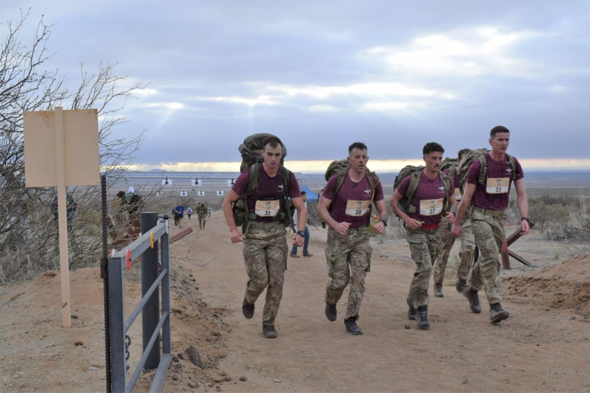

The events leading up to the surrender in Bataan began with the Japanese invasion of the Philippines shortly
after the attack on Pearl Harbor in December 1941. The Japanese forces quickly advanced, capturing Manila,
the
capital, within a month. U.S. and Filipino troops, under the command of General Douglas MacArthur, retreated
to
the Bataan Peninsula, where they established defensive positions. Despite their valiant efforts, the
defenders
faced severe shortages of food, ammunition, and medical supplies. The situation worsened as the Japanese
continued their relentless attacks, and by April 1942, the defenders were weakened by starvation, disease,
and
continuous combat.
On April 9, 1942, realizing that further resistance was futile and to prevent further loss of life, General
Edward P. King, who had taken command after MacArthur's departure, made the difficult decision to surrender.
Approximately 75,000 American and Filipino soldiers were captured by the Japanese and subsequently forced to
march approximately 60 miles to prison camps in what became known as the Bataan Death March. This march was
marked by brutal conditions, including physical abuse and lack of food and water, leading to the deaths of
thousands of prisoners.
Come twords our lines waving a white flag
Strap your gun over your left shoulder muzzle down and pointing behind you
Show the ticket to the sentry
Any number of you may surrender with this one ticket
The Bataan Death March, which began on April 9, 1942, is one of the darkest episodes of World War II.
Following
the surrender of the Bataan Peninsula to the Japanese, approximately 75,000 Filipino and American soldiers
were
forced to march about 60 miles from Mariveles and Bagac to San Fernando, Pampanga, and then to Camp
O'Donnell.
The march was characterized by brutal and inhumane treatment by the Japanese guards. The prisoners were
subjected to extreme physical abuse, denied food and water, and forced to endure the scorching heat. Those
who
fell behind or could not continue were often beaten or killed. The march turned into a deadly trek as many
succumbed to starvation, dehydration, and exhaustion.
During the Bataan Death March, an estimated 10,000 Filipino and 650 American prisoners of war died as a
result
of the harsh conditions. The survivors faced even more suffering at the prison camps, where overcrowding,
disease, and lack of medical care further decimated their numbers. News of the atrocities committed during
the
march eventually reached the United States and fueled determination to defeat the Japanese. The Bataan Death
March remains a stark reminder of the horrors of war and the resilience of those who endured it. It stands
as a
poignant chapter in the history of World War II, exemplifying both the cruelty of the conflict and the
courage
of its victims.
After the grueling Bataan Death March, the survivors were taken to various concentration camps, the most
notorious being Camp O'Donnell. Conditions in these camps were horrendous. Overcrowding was rampant, with
thousands of prisoners crammed into inadequate facilities. Basic necessities like food, water, and medical
supplies were scarce, leading to widespread malnutrition and disease. Dysentery, malaria, and beriberi were
common, and the lack of proper medical care meant that many prisoners succumbed to these illnesses. The
guards
often subjected the prisoners to brutal treatment, including beatings and forced labor, further exacerbating
their suffering.
Despite the dire conditions, the prisoners displayed remarkable resilience and solidarity. They formed
makeshift
hospitals and shared whatever resources they could find. Acts of kindness and camaraderie were common, as
the
prisoners relied on each other for support and survival. The harsh realities of the camps left a lasting
impact
on the survivors, many of whom carried physical and emotional scars for the rest of their lives. The
experiences
in these concentration camps highlighted the extreme cruelty of war and the incredible strength of the human
spirit in the face of unimaginable adversity.
Effect on the soldiers
The Bataan Death March had profound physical and emotional effects on the soldiers who endured it.
Physically,
the prisoners faced extreme conditions, including brutal heat, lack of food and water, and forced marches
over
rugged terrain. Many suffered from severe malnutrition, dehydration, and diseases such as dysentery and
malaria.
The physical toll was immense, with thousands of soldiers experiencing lasting health issues, including
chronic
pain, disabilities, and weakened immune systems.
Emotionally, the survivors were deeply scarred by the trauma of the march and their subsequent imprisonment.
The
constant physical abuse, witnessing the deaths of comrades, and the overall brutality of their captors left
many
soldiers with lasting psychological scars. Many experienced symptoms of post-traumatic stress disorder
(PTSD),
depression, and anxiety, which affected their ability to reintegrate into civilian life. The emotional
impact
was compounded by the stigma and lack of understanding they faced upon returning home, making their recovery
even more challenging.
How We Remember Them
Today, the Bataan Death March is remembered through various commemorative events and memorials that honor
the
bravery and sacrifice of those who endured the harrowing ordeal. One of the most significant events is the
annual Bataan Memorial Death March, held at the White Sands Missile Range in New Mexico. This challenging
marathon event attracts thousands of participants, including veterans, active military personnel, and
civilians,
who walk or run the grueling route to pay tribute to the soldiers who suffered during the march.
Participants
often carry heavy backpacks to symbolize the burdens borne by the prisoners of war, making the event both a
physical and emotional homage.

In addition to the marathon, there are numerous memorials and monuments dedicated to the Bataan Death March
across the United States and the Philippines. In Bataan, the Mount Samat National Shrine, also known as the
Dambana ng Kagitingan (Shrine of Valor), stands as a poignant reminder of the heroism displayed during the
battle and the march. Educational programs, museum exhibits, and public ceremonies also play a crucial role
in
preserving the memory of the Bataan Death March. These efforts ensure that the stories of courage,
resilience,
and sacrifice are passed down to future generations, fostering a deeper understanding and appreciation of
this
significant historical event.
Despite all of this sadness, people are still happy: